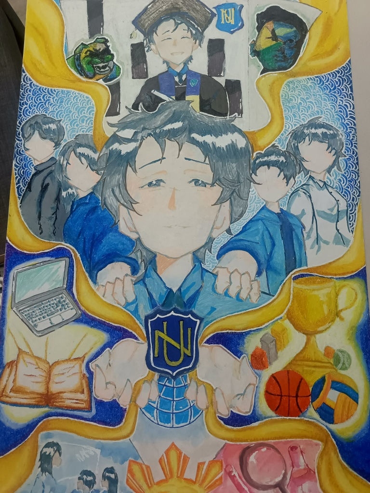

An interactive breakdown of our poster connecting the National University's legacy, community, and excellence.
The graduate positioned at the highest point of the poster represents the ultimate goal of every student. It symbolizes the culmination of hard work, resilience, and the bright future achieved through quality education.
The students gathered in the center illustrate the strength of the community. They embody camaraderie, diversity, and the shared journey of individuals coming together to support one another under one legacy.
The laptop and open book highlight the institution's commitment to both traditional learning and modern technological innovation. They represent equipping students with the essential knowledge and skills needed for the future.
The championship trophy, basketball, and volleyball represent a rich history in sports. It emphasizes physical excellence, teamwork, and a continuous drive for victory in all endeavors.
The shield and globe anchor the entire artwork. Connected by flowing golden pathways to all other elements, they signify that the 126-year legacy is the firm foundation holding academics, sports, and student life together.
Nickname
Nickname
Nickname
Quinn / Xander